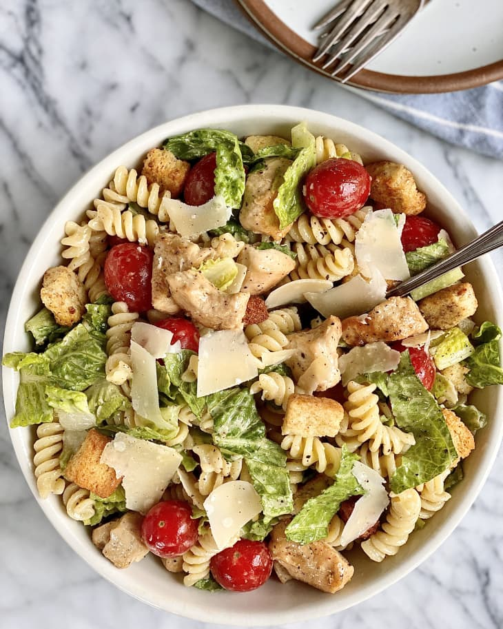

Caesar Pasta Salad

Creamy Caesar Pasta Salad Is Ready in Just 20 Minutes
Ingredients
- 8 ounces dried rotini pasta (about scant 2 1/2 cups)
- 1 pound boneless, skinless chicken breasts (about 2 small)
- 1/2 teaspoon kosher salt, plus more for the pasta water
- 1/4 teaspon freshly ground black pepper
- 1 tablespoon olive oil
- 1 small heart romaine lettuce (about 4 ounces)
- 1 pint grape tomatoes (about 10 ounces)
- 1 ounce Parmesan cheese, plus more for garnish
- 1 1/2 cups homemade or store-bought croutons
- 1/2 cup homemade or store-bought creamy Caesar dressing
Steps
- Bring a large saucepan of heavily salted water to a boil.
Add 8 ounces dried rotini pasta and cook according to package
directions until al dente, 9 to 11 minutes. Meanwhile, cook the chicken.
- Pat 1 pound boneless, skinless chicken breasts dry with paper towels
and cut into 1-inch cubes. Season all over with 1/2 teaspoon kosher
salt and 1/4 teaspoon black pepper.
- Heat 1 tablespoon olive oil in a 12-inch or larger skillet over
medium-high heat until shimmering. Add the chicken in a single layer
and cook, flipping occasionally, until cooked through and browned all
over, 6 to 8 minutes total. Remove the skillet from the heat.
- When the pasta is ready, drain and rinse with cold water to cool.
Drain well.
- Prepare the following, adding each to the same large bowl as you
complete it: Core and chop 1 small heart romaine lettuce into
bite-sized pieces (about 3 cups). Shave 1 ounce Parmesan cheese with
a vegetable peeler into shards (about 1/2 cup).
- Add the pasta, chicken, 1 pint grape tomatoes, 1 1/2 cups croutons,
and 1/2 cup creamy Caesar dressing. Toss to coat. Garnish with more
Parmesan cheese shards if desired.